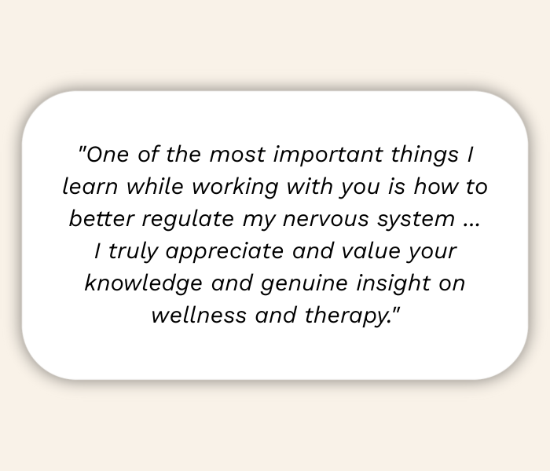
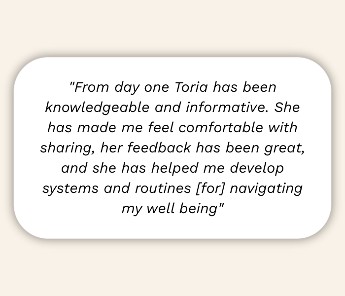
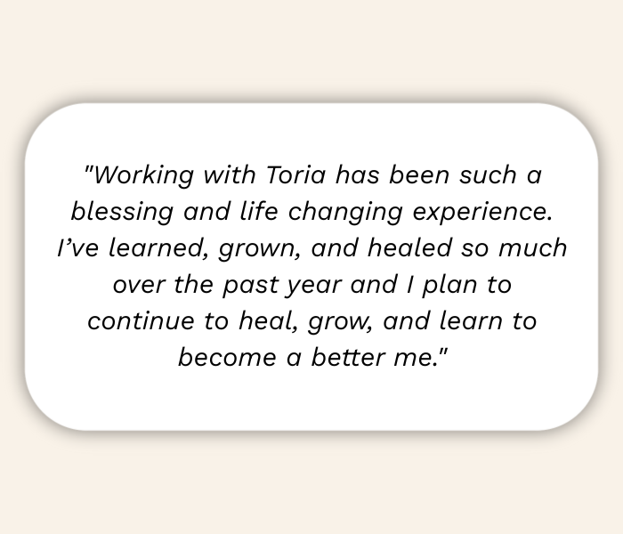

Clarity Flow
Best for people who feel overwhelmed, confused about where to start, or unsure what they “need.”
Mentalchemy is the art and science of transforming awareness into embodied change. It’s not about fixing what’s "broken", it’s about remembering what’s whole. The Mentalchemist is a living ecosystem devoted to reclaiming healing as accessible, embodied transformation. A practice that bridges evidence-based psychology, somatic practice, and creative expression to guide people back to the one place where true control exists: within themselves. Learn where to start below.
Best for people who feel overwhelmed, confused about where to start, or unsure what they “need.”
Best for people who like to explore independently first or require the flexibility of self-paced engagement.
Best for creatives who want to reconnect with their voice and rebuild trust with their artistic identity.




Toria is a somatic practitioner, musical artist, and mental health professional bridging science and spirit to make healing feel human again. With a background in psychology, social work, and public health, as well as lived experience as a CPTSD survivor, Tori approaches healing as both personal practice and collective responsibility. Her work merges clinical skill, creative process, and intuitive embodiment to help people reconnect to their agency and design lives that feel like their own. She created The Mentalchemist as a container for truth, autonomy, and transformation. It is a place where evidence-based care meets ancestral wisdom, where every emotion holds intelligence.
"In this lifetime, there are no coincidences." — Toria Hawkins